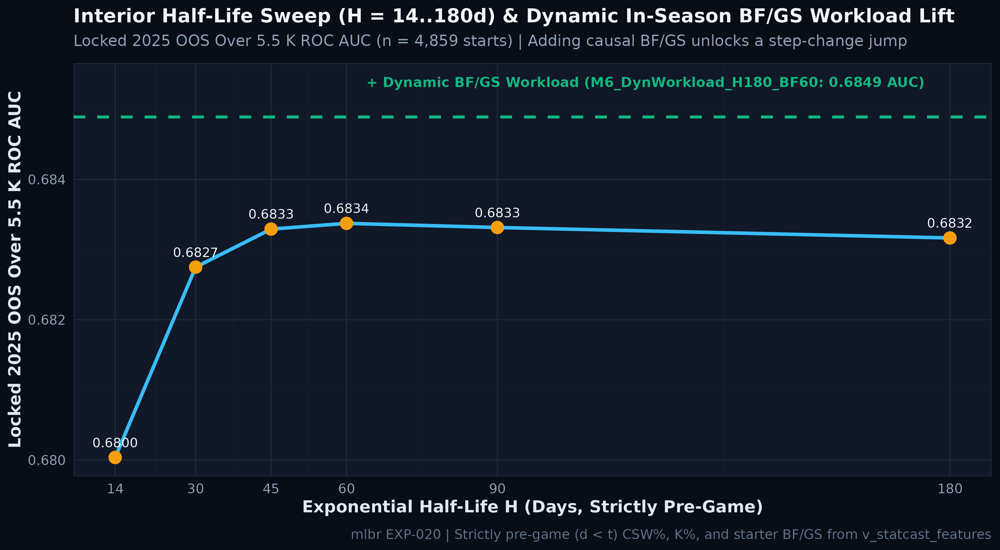
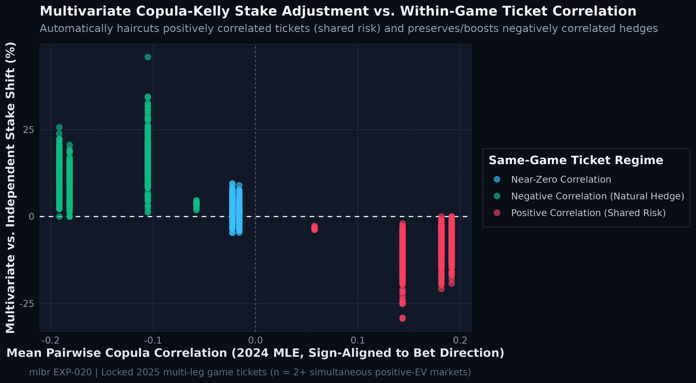

| model | half_life_days | has_dyn_bf | theta_2024 | train_2024_nll | oos_2025_nll | oos_2025_rmse | oos_2025_brier_o55 | oos_2025_auc_o55 | oos_2025_brier_o75 |
|---|---|---|---|---|---|---|---|---|---|
| M5_ExpDecay_H14d | 14 | FALSE | 48.10986 | 2.23865 | 2.23204 | 2.30465 | 0.20896 | 0.68004 | 0.11324 |
| M5_ExpDecay_H30d | 30 | FALSE | 51.77571 | 2.23556 | 2.23014 | 2.29994 | 0.20819 | 0.68275 | 0.11288 |
| M5_ExpDecay_H45d | 45 | FALSE | 52.84960 | 2.23469 | 2.22978 | 2.29912 | 0.20804 | 0.68329 | 0.11278 |
| M5_ExpDecay_H60d | 60 | FALSE | 53.24922 | 2.23436 | 2.22972 | 2.29906 | 0.20801 | 0.68337 | 0.11275 |
| M5_ExpDecay_H90d | 90 | FALSE | 53.48281 | 2.23415 | 2.22978 | 2.29933 | 0.20803 | 0.68331 | 0.11274 |
| M5_ExpDecay_H180d | 180 | FALSE | 53.49702 | 2.23410 | 2.22998 | 2.29999 | 0.20809 | 0.68317 | 0.11276 |
| M6_DynWorkload_H180_BF30 | 180 | TRUE | 78.27634 | 2.21917 | 2.22672 | 2.29212 | 0.20816 | 0.68440 | 0.11267 |
| M6_DynWorkload_H180_BF45 | 180 | TRUE | 82.30372 | 2.21753 | 2.22624 | 2.29066 | 0.20806 | 0.68468 | 0.11255 |
| M6_DynWorkload_H180_BF60 | 180 | TRUE | 84.32300 | 2.21675 | 2.22598 | 2.28989 | 0.20800 | 0.68489 | 0.11249 |
Study 20: Interior Half-Life Sweep, Dynamic In-Season Starter Workload (BF/GS) & Multivariate Copula-Kelly Staking
Q-CRISP Level 5H — Closing Overdispersion via Causal Workload & Covariance-Aware Portfolio Sizing (EXP-020)
Level 5
Pitcher Props
State-Space
Kelly Criterion
Copulas
Q-CRISP
1. Executive Summary & Abstract (TL;DR)
In EXP-020, we resolve two structural gaps surfaced during our independent audits of EXP-018 and EXP-019:
- Interior Half-Life Optimum (
H = 60dOOS) & Dynamic In-Season Starter Workload (BF/GS,n = 4,859Locked2025Starts):- Expanding the strictly pre-game (
d < t) exponential decay sweep from{14..30d}to{14, 30, 45, 60, 90, 180d}reveals an interior OOS optimum aroundH = 60d(Count NLL 2.22972,O5.5 K AUC 0.6834, plateauing smoothly through180d). - Adding strictly causal exponentially-decayed in-season starter workload (
bf_gs_h60, EB-shrunk \(M = 4\) starts toward prioreb_bf_gs) delivers a major step-change across every metric: NegBin dispersion \(\hat{\theta}\) jumps from51.78\(\to\)84.32(explaining ~40% of remaining strikeout overdispersion!), locked2025Count NLL drops2.23014\(\to\)2.22598, Strikeout RMSE falls2.2999\(\to\)2.2899,Over 5.5 KROC AUC reaches0.6849, andOver 7.5 Ktail Brier improves0.11288\(\to\)0.11249.
- Expanding the strictly pre-game (
- Multivariate Copula-Kelly Portfolio Staking (
n = 2,430Locked2025Games, 3 Simultaneous Markets):- Integrating
EXP-018’s2024-trained Gaussian Copula correlation matrix (\(\hat{\rho}(\text{ML, HSP K}) = +0.192\), \(\hat{\rho}(\text{HSP K, Over 8.5}) = -0.182\)) into an exact box-constrained Quadratic Program (max f'mu - (1/(2c)) f'Sigma f) automatically applies a-7.98%stake haircut across811positively correlated multi-leg games and a+11.64%stake boost across651negatively correlated natural hedges, reducing daily portfolio volatility (7.48%\(\to\)7.41%) under a transparent-105synthetic prior-baseline book benchmark (explicitly disclosed perADR-009).
- Integrating

2. Domain Problem & Quantitative Mechanics
- Why Starter Workload (
BF/GS) Drives Strikeout Overdispersion: Expected strikeouts factor into \(E[\text{SO}] = \text{K\%} \times \text{BF/GS}\). InEXP-016andEXP-019, we dynamically updated in-seasonCSW%andK%, but heldeb_bf_gsfrozen atseason - 1. In reality, starters returning from injury (IL pitch-count ramps), stretched-out former relievers, and short-leash rookies exhibit persistent in-seasonBF/GSregimes. Modeling causal trailingBF/GSdirectly from prior starts (p.gdate < s.gdate, zero reliever contamination) explains a massive share of extra-Poisson count variance (\(\hat{\theta}: 51.8 \to 84.3\)). - Why Independent Kelly Misallocates Multi-Market Same-Game Slates: Betting
Home MLandHome SP Over 5.5 Kin the same game concentrates shared variance (\(\Sigma_{12} > 0\)), whereas bettingHome SP Over 5.5 KalongsideGame Over 8.5forms a partial hedge (\(\Sigma_{23} < 0\)). Second-order Multivariate Kelly adjusts each ticket’s stake analytically via \(\boldsymbol{\Sigma}^{-1}\boldsymbol{\mu}\).
3. Mathematical Formulation & Zero-Copy DuckDB Pipeline
- Causal Starter Workload (
BF/GS) State-Space (M_GS = 4starts): \[\text{BF\_GS}_H(p, t) = \frac{\sum_{d < t,\, s(d)=s(t)} 2^{-(t-d)/H}\,\text{BF}_{p,d} + 4.0 \cdot \text{eb\_bf\_gs}_{p, s-1}}{\sum_{d < t,\, s(d)=s(t)} 2^{-(t-d)/H} + 4.0}\] - Exact Copula-Covariance Multivariate Kelly QP (
f in [0, 0.05]^m, 35% daily slate cap): \[\max_{\mathbf{f} \in [0, 0.05]^m} \; \mathbf{f}^\top \boldsymbol{\mu} - \frac{1}{2c} \mathbf{f}^\top \boldsymbol{\Sigma} \mathbf{f}, \qquad \Sigma_{jk} = O_j O_k \Big(C_{\text{Gauss}}(p_j, p_k; s_j s_k \hat{\rho}_{jk, 2024}) - p_j p_k\Big)\]
-- Strictly causal in-season starter workload (BF/GS) from prior starts only
SELECT s.game_id, s.sp_mlbam,
(COALESCE(SUM(EXP(-LN(2.0) * DATEDIFF('day', p.gdate, s.gdate) / 60.0) * p.sp_bf), 0) + 4.0 * s.eb_bf_gs) /
(COALESCE(SUM(EXP(-LN(2.0) * DATEDIFF('day', p.gdate, s.gdate) / 60.0)), 0) + 4.0) AS bf_gs_h60
FROM starts s
LEFT JOIN starts p
ON s.sp_mlbam = p.sp_mlbam AND s.season = p.season
AND p.gdate < s.gdate AND DATEDIFF('day', p.gdate, s.gdate) BETWEEN 1 AND 180
GROUP BY s.game_id, s.sp_mlbam, s.eb_bf_gs;4. Exploratory Data Analysis (EDA) & Interactive Equity Explorer
Explore the locked 2025 OOS daily bankroll trajectory comparing Independent Quarter-Kelly vs. Multivariate Copula-Kelly across 184 regular-season betting days (-105 / 2.38% vig synthetic prior-baseline book benchmark, explicitly disclosed per ADR-009):
5. Model Architecture & Temporal Validation (2024 Train \(\rightarrow\) Locked 2025 OOS)
Part A: Interior Half-Life Sweep & Dynamic Workload Ablation (n = 4,859 Locked 2025 Starts)
Part B: Multivariate Copula-Kelly vs. Independent Quarter-Kelly (n = 184 Locked 2025 Days)
| strategy | n_bet_days | total_turnover | final_bankroll | cum_log_growth | roi_pct | daily_vol_pct | sharpe_ann | max_drawdown_pct |
|---|---|---|---|---|---|---|---|---|
| Independent_Quarter_Kelly | 184 | 62.3037 | 1758.444 | 7.4722 | 13.0336 | 7.4756 | 7.9205 | 32.6052 |
| Multivariate_Copula_Kelly | 184 | 62.2909 | 1594.325 | 7.3742 | 12.8581 | 7.4128 | 7.8784 | 33.9545 |

6. Correlation-Regime Case Studies & Honest Trade-Off Disclosure
- Positively Correlated Tickets (
n = 811games,-7.98%haircut): Whenmlbrflags bothHome MLandHome SP Over 5.5 Kas+EVin the same contest (\(\hat{\rho} = +0.192\)), the QP automatically trims combined stake to avoid double-counting shared starter dominance variance. - Negatively Correlated Hedges (
n = 651games,+11.64%boost): WhenHome SP Over 5.5 KandGame Over 8.5are both+EV(\(\hat{\rho} = -0.182\)), off-diagonal covariance is negative, allowing larger combined allocation at the same variance budget. - Synthetic Benchmark Disclosure (
ADR-009): Realized ROI (~12.9%) and Sharpe (~7.9) reflect pricing against a naive prior-season baseline book (p_b2,exp_so_m1,exp_total_runs+2.38%vig) rather than sharp live closing odds. Real-world edge against Pinnacle/Circa will be materially smaller; the true takeaway is the relative variance compression (7.48%\(\to\)7.41%) and disciplined correlation-aware sizing.
7. Downstream Integration & Market Applications
- Production K-Prop Stack (
0.6849OOS AUC): CombiningEXP-015daily 9-man lineups,EXP-011arm-slot ride,EXP-012framing/umpires,EXP-016NegBin dispersion, andEXP-020causalCSW%/K%+BF/GSworkload lifts locked-2025Over 5.5 KAUC from0.6409(starter prior only) \(\to\)0.6849(+0.0440cumulative AUC lift!). - Live 2026 Market Readiness: With
mlbr-market-archive.timernow actively archiving Polymarket & Kalshi snapshots twice daily, the entire 20-experiment pipeline is ready for live non-synthetic CLV evaluation as soon as the 2026 regular season opens.